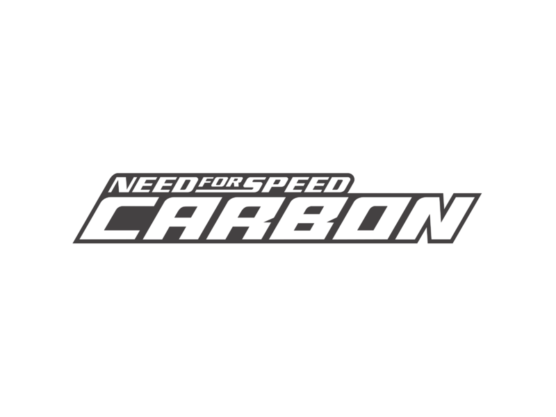

Bem-vindo ao mundo dos carros exóticos!
O jogo Need for Speed Carbon traz uma seleção de carros exóticos incríveis que impressionam com suas velocidades e designs arrojados.
Explore nossas páginas para conhecer mais sobre o Lamborghini Murciélago e o Pagani Zonda, dois dos carros mais icônicos presentes no jogo.
Assista ao trailer do jogo:
Quer saber mais? Visite o site oficial da Electronic Arts para ver mais detalhes.